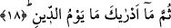
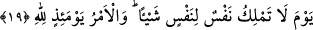

bir vasıfın açıklanması istenmektedir. Buna göre âyete mânâ vermek gerekirse şöyle
deriz: Ceza gününün ne olduğunu sana bildiren hangi şeydir? Yani hangi acayip şeydir o
ki, o günün korkunçluğunu ve fecâatini sana bildirmiştir? Bir başka ifâdeyle; şu ana
kadar hiç kimse o günün nasıl bir gün olacağını sana bildirmiş değildir. Çünkü o gün
yaratıkların kavrama kapasitelerinin içinde bir gün değildir. Şu halde onlar o günü hangi
biçimde kafalarında canlandırıyorlar? Bugün bütün onların canlandırdıkları biçimin
üzerinde hem de kat kat üzerindedir.
18. Evet. Ceza gününü sana bildiren nedir?
Bu son ifâde, tekrar ve pekiştirme amacıyla, rütbe itibariyle aşağıdan yukarıya doğru
bir çıkış ve yükselme ifâde eden “sümme” kelimesiyle sağlanmıştır. Bu tekrar hem
pekiştirme ve hem de katmaktadır. Her iki âyet muhatapları hayrete düşürmeyi ve
kıyamet gününün şanının yüceltmeyi amaçlamaktadır. Burada “cezâ günü” ifâdesinin
yerine zamir getirmek mümkün iken açık olarak isminin getirilmesi o günün
korkunçluğunu ve fecâatini pekiştirmek içindir.
19. O gün hiçbir kimse başkası için bir şey yapamaz. O gün buyruk Allah’ındır.
“O gün hiçbir kimse başkası için bir şey yapamaz.” Bu son âyet, cezâ gününün
şanını -önce müphem (kapalı) bıraktıktan, onun nasıl bir gün olduğunun yaratıkların
bilgisi dışında olduğunu vurguladıktan sonra- beyân eden bir cümledir. Bu beyân,
vaadedilen şeyin yerine getirilmesi yoluyla olmaktadır. Çünkü onların bu günün şanını
anlayamayacakları ifâdesi, iyi vaadin anlaşılacağına işâret etmektedir.
İbn Abbas (r.a.) der ki: Kur’an-ı Kerim’de “mâ edrake” kalıbında gelen ifâdeler
ardından sorulan şeyin ne olduğu açıklanmıştır. Ama “ma yüdriyke” sorusunun ardından
sonra ise sorulan şeyin ne olduğu kapalı bırakılmıştır. O halde burada âdetâ şöyle
denmektedir. O gün hiçbir kimsenin hiçbir kimseye, hiçbir hususta birşey yapmaya kadir
olamayacağı gündür. Âyetteki “yevm” kelimesi ya gizli bir mübtedânın haberi olarak
merfû’dur ya da gizli bir “üzkür/hatırla” fiilinin mansubudur. Burada âdetâ şöyle
denmiş oluyor; cezâ gününün durumu yüceltildikten ve Peygamber Efendimiz’in o günü
öğrenmesi teşvik edildikten sonra deniliyor ki: Hiçbir kimsenin hiçbir şey yapamayacak
olduğu o günü hatırla. Çünkü o, o günün nasıl bir gün olduğunu sana bildiriyor.
Bu son âyette geçen “nefis/kimse” kelimesi içine gerek beşer gerek cin bütün herkes
dâhildir. Aynı âyette yer alan “şey” kelimesine ise menfaat/yarar sağlama ve zararı